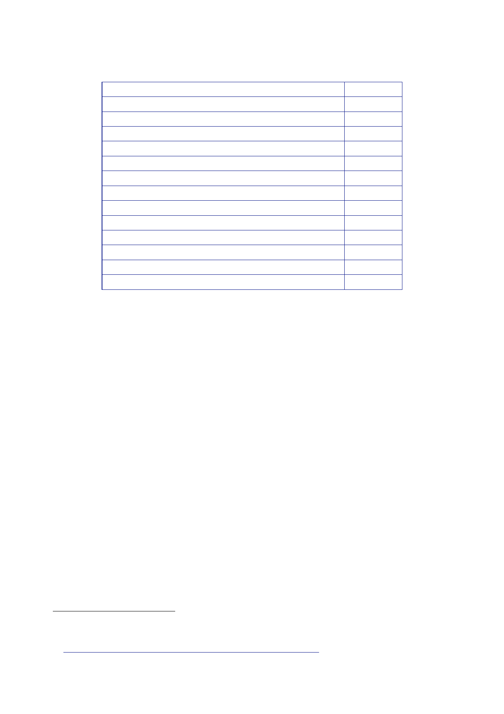

The Report
of the Iraq Inquiry
Political
Group
United
Iraqi Alliance/Coalition
Kurdistan
Alliance
Iraqi
List
Iraqis
Party
Turkoman
Iraq Front
National
Independent Cadres and Elites Party
People’s
Union (Communist)
Kurdistan
Islamic Group
Islamic
Action Organisation in Iraq
National
Democratic Alliance
Al-Rafideen
National List
Liberation
and Reconciliation Gathering
Total:
Seats
140
75
40
5
3
3
2
2
2
1
1
1
275
483.
In a telephone
call with President Bush on 15 February, Mr Blair described
the
electoral
turnout in Sunni areas as “extraordinary”.261
484.
Mr Blair
suggested that the elimination of the threat from Abu Musab
al-Zarqawi
– the most
visible part of the insurgency – would make a big difference and
offered the
view
that:
“Basically
we had to reduce the insurgency to the hard core and then eliminate
it.”
485.
On 16
February, the JIC issued an Assessment of the emerging political
landscape
and of key
political and security issues.262
486.
The JIC
assessed that perhaps fewer than 10 percent of voters had
probably
turned out
in the Sunni heartlands, and only two percent in Anbar
province.
Overall turnout
was 58 percent.
487.
The JIC judged
that the UIA was “likely to stick together long enough to
decide
on the new
Prime Minister and makeup of the Presidency”. Prime Minister Allawi
was
unlikely to
retain his post.
488.
The JIC’s Key
Judgements included:
“II. There
are already encouraging signs of Shia outreach to the Sunnis, but
the test
will be the
degree to which the Shia are willing to include them in the
Government
and in
drafting the Constitution, and the extent to which Sunnis are
willing to
261
Letter
Phillipson to Owen, 16 February 2005, ‘Prime Minister’s phonecall
with President Bush,
15
February: Iraq and Syria/Lebanon’.
262
JIC
Assessment, 16 February 2005, ‘Iraq; Post Election
Landscape’.
472